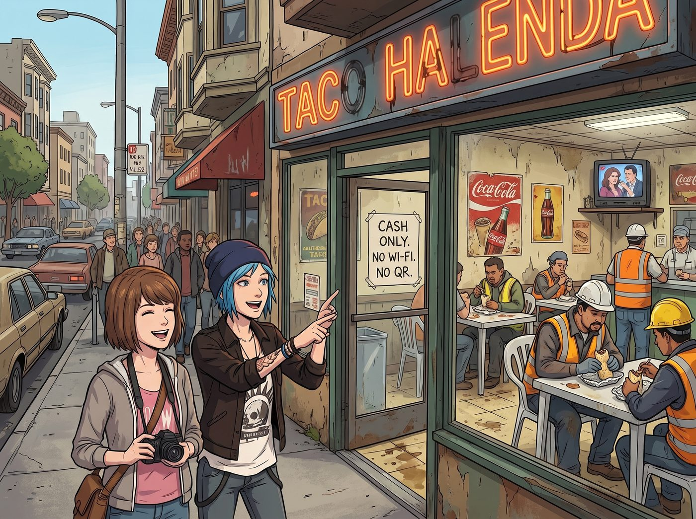

高價值食物爭奪戰

逃離了那家散發著演算法臭味的相機店後，兩人在舊金山米慎區的街頭遊蕩，發誓要找到一家絕對沒有被矽谷創投基金投資過、且絕對不提供二維碼點餐的餐廳。
在兩條街外的一個轉角，她們找到了一家連招牌霓虹燈都壞了兩個字母的正宗墨西哥塔可店。店裡鋪著充滿油垢的油氈地板，牆上掛著九零年代的可樂海報，一台老舊的CRT電視正大聲播放著沒有字幕的西班牙語肥皂劇。幾名穿著反光背心的建築工人和修路工人正坐在黏糊糊的塑膠桌旁，大口嚼著錫箔紙包著的巨無霸捲餅。
沒有 Wi-Fi，沒有 AI 點餐系統，只收現金。對 Chloe 和 Max 來說，這裡簡直是碳基生物的應許之地。
一、碳基生物的應許之地
五分鐘後，兩盤散發著驚人熱量與香料氣味的民工餐被一個胖胖的墨西哥大媽重重地砸在了她們面前的塑膠桌上。
Chloe 面前是一座名副其實的烤肉薯條山——炸得金黃酥脆的粗薯條上，堆滿了焦香的現烤牛肉塊，頂部還覆蓋著一座由融化起司、酪梨醬和酸奶油組成的活火山。而 Max 點的則是一大盤魔鬼辣炒蝦，濃郁的紅辣椒醬汁裹著肥美的鮮蝦，旁邊配著一大勺吸滿了肉汁的墨西哥紅飯和燉豆泥。
兩個人連話都顧不上說，抓起塑料叉子就開始了風捲殘雲般的暴食。這是在 Visa 總部那個連呼吸都要計算 KPI 的賽博監獄裡被徹底餓出來的原始本能。
二、微妙的戰術變化
吃到一半時，餐桌上的氣氛開始發生了微妙的戰術變化。
Chloe 咀嚼著滿嘴的牛肉，湛藍的眼睛越過桌子，死死盯上了 Max 盤子裡那隻體型最大、裹著最完美醬汁、一看就是全場MVP的大蝦。而 Max 此刻正低著頭，專心致志地用叉子將豆泥和米飯攪拌在一起，似乎對即將到來的危機毫無察覺。
Chloe 放慢了咀嚼的速度。她握緊手裡的塑料叉子，彷彿那是一把精確制導的魚叉。她看準時機，以迅雷不及掩耳的速度越過邊界，精準地刺中了那隻高價值大蝦，然後閃電般地縮回手，直接塞進了自己嘴裡。
「唔！」Chloe 滿足地發出一聲咀嚼鮮蝦的讚嘆，帶著勝利者的囂張看著 Max。
Max 抬起頭，看著自己盤子裡那個空蕩蕩的醬汁坑，眼睛微微睜大。
「Chloe Price，妳剛剛是不是叉走了我盤子裡唯一一隻帶蝦黃的蝦王？」Max 放下手裡的汽水，語氣平靜，但眼神裡已經燃起了十三歲時在沙坑裡搶玩具的鬥志。
三、惡意併購與精神損失費
「這是廢土安保稅，Maxine。」Chloe 毫無悔意地舔了舔嘴唇上的辣醬，「我今天陪妳忍受了無人車和那台終結者相機，我的大腦需要優質蛋白質來修復創傷。」
「很好。」
Max 沒有爭辯。她默默地舉起自己的叉子。
下一秒，在 Chloe 還沒來得及構築防禦工事的瞬間，Max 的叉子以一種完全不符合文青人設的暴戾姿態，狠狠地插進了 Chloe 的薯條山中心。她不僅精準地挑出了一塊烤得最焦脆、面積最大的極品牛肉，還順帶捲走了一大坨牽絲的融化起司和最完美的酪梨醬。
「喂！那是我的核心資產！」Chloe 瞪大了眼睛，看著自己盤子裡瞬間坍塌的火山口，發出了痛心疾首的抗議，「妳這是非法的惡意併購！」
「這是精神損失費。」Max 毫不客氣地把那塊帶著起司的牛肉塞進嘴裡，被辣得微微皺起眉頭，但依然露出了勝利的壞笑，「誰讓妳剛才在相機店裡差點把我的寶麗來貶得一文不值。」
「我哪有貶低妳的相機，我是在罵那個AI假貨！」
「妳就是有。現在，閉嘴，不然我要去叉妳盤子裡那塊最大的培根了。」
在這家充滿了油煙味、吵鬧的西班牙語音樂和建築工人大笑聲的破舊塔可店裡，兩個掌握著核反應爐和頂級跨國金融黑魔法的女孩，正像兩個小學生一樣，拿著塑料叉子在油膩的餐桌上進行著激烈的高價值食物爭奪戰。
沒有演算法計算她們的卡路里，沒有風控模型警告她們的膽固醇攝取量。她們一邊互相吐槽，一邊毫不留情地從對方的盤子裡搶走最好吃的那一口，然後相視大笑，嘴角沾滿了起司和紅辣椒醬。在這個被矽谷代碼徹底包裹的城市裡，這頓毫無形象的民工餐，成了她們今天最真實、最完美的一場勝利。